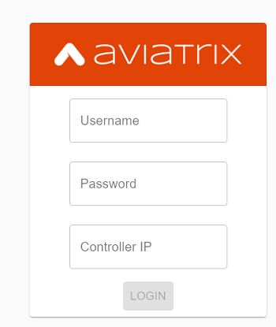
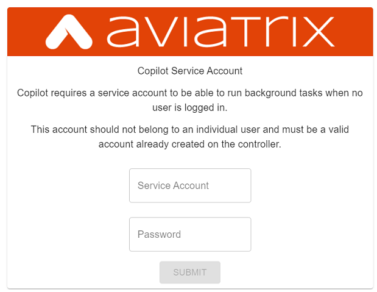
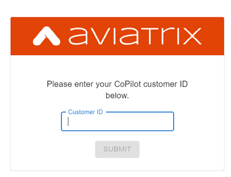
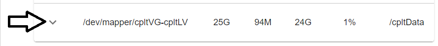
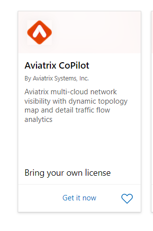
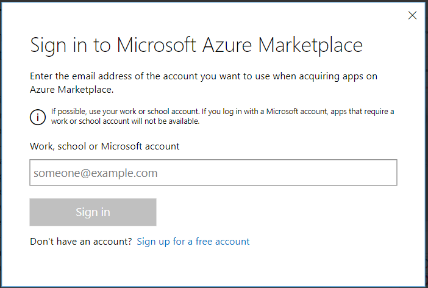
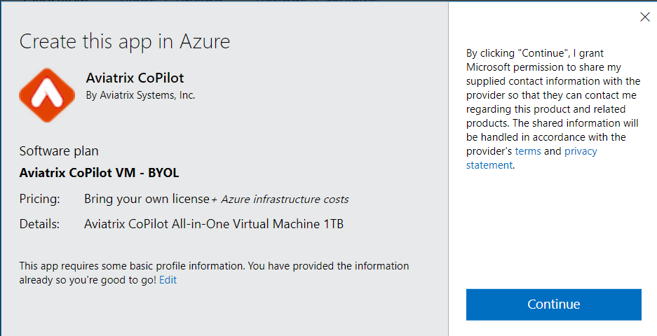
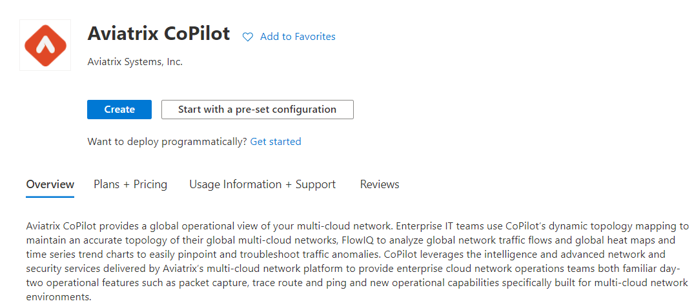
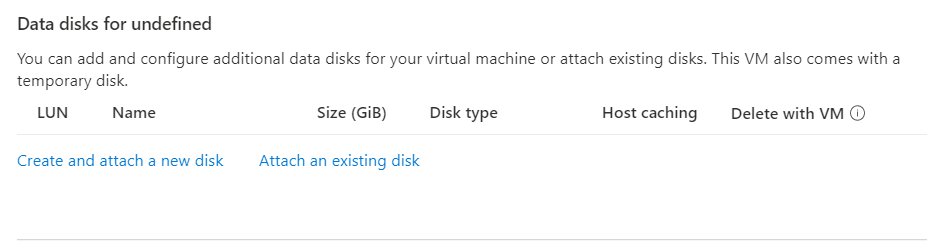

Aviatrix CoPilot Deployment Guide
Launch CoPilot
Aviatrix CoPilot is available as an all-in-one virtual appliance that is hosted in a user’s own IaaS cloud environment. It can be launched as an EC2 instance in AWS, a virtual machine in Azure, or a VM instance in GCP and OCI. Please make sure default configurations for resources settings that are recommended by marketplaces are applied during launch. After successfully launching the instance, follow these steps to configure CoPilot instance parameters and launch. Please note that you will need an Aviatrix Controller to use CoPilot. CoPilot works in tandem with Aviatrix Controller. Aviatrix Controller and CoPilot are not required to be collocated. It is possible to run them in separate VPCs/VNETs or separate cloud providers (in multi-cloud environments).
Instance Configuration Details
-
Configure your CoPilot security group as shown below to allow the following:
-
443 from anywhere user access (User Interface)
-
UDP port 5000 from specific gateway IPs
-
UDP port 31283 from specific gateway IPs
-
|
Tip
You can leverage Aviatrix Controller’s security group management to copy the IP addresses of the gateways. |
Subscribe to a CoPilot Offer
Subscribe to an Aviatrix CoPilot offer in a cloud provider marketplace.
For licensing and trials, CoPilot is offered with a BYOL model. Before subscribing to CoPilot in a cloud marketplace, obtain a license key for CoPilot by contacting your Aviatrix Sales representative. Since CoPilot works in tandem with Aviatrix Controller to provide visibility into your cloud resources managed by the controller, it is assumed that you already have a controller.
To subscribe to a CoPilot offer:
-
Log in to the marketplace of your chosen cloud provider using your provider user account credentials. CoPilot is available in the marketplaces for:
-
Amazon Web Services (AWS)
-
Google Cloud Platform
-
Microsoft Azure Marketplace
-
Oracle Cloud Infrastructure (OCI)
-
-
Locate the Aviatrix CoPilot software offer you want to subscribe to and click Subscribe.
For information about Aviatrix CoPilot image versions, see Aviatrix CoPilot Image Release Notes.
-
When prompted, review the subscription pricing information and accept the terms and conditions. You may be prompted to confirm your subscription before moving on to configuration.
-
Each marketplace will prompt you to configure and launch the CoPilot software. Apply the default configurations for resource settings that are recommmended by your chosen marketplace. For CoPilot instance configurations, you can accept the defaults or change them to suit your business needs. Note the following required CoPilot instance specifications:
-
(Storage & Instance)
When deploying the Aviatrix CoPilot 1.5.1 image release: During instance creation, you must attach at least one data disk (data volume) to your CoPilot instance to be used for expandable storage (see CoPilot Disk (Volume) Management). This is in addition to the 25GB root disk that comes with CoPilot. Create your disk (volume) and attach the disk (volume) to your CoPilot instance. You can choose the disk type (volume type) that meets your business needs given the size of your environment and performance requirements. There is no minimum requirement for the storage you add at this stage. Attach the disk (volume) to your CoPilot instance. Later, when you newly launch CoPilot, CoPilot will format and attach your disks (a logical disk/volume is created from all physical disks) as part of the initial setup. ** CoPilot supports automatic memory sizing for the ETL and datastore based on the physical memory of the instance at boot. The base image will default to these automatic settings. Memory settings are located in CoPilot under Settings > Configuration > Options.
+ When deploying Pre-1.5.1 image releases:
-
For machine/instance/VM type, CoPilot requires a minimum of 8 vCPUs and 32 GB Memory.
-
CoPilot requires 2 TB of storage (SSD recommended).
-
-
CoPilot requires a static public IP address (for example, an Elastic IP address in AWS)
-
Copilot requires the following service ports:
-
TCP port 443 for Web UI (to reach CoPilot public IP via HTTPS using your web browser)
-
UDP port 31283 for FlowIQ (port is configurable)
-
UDP port 5000 for Remote Syslog Service
For the UDP ports, change the default inbound rule of 0.0.0.0/0 to only the IP addresses of your Aviatrix gateways. For port 443, you can allow only your and other trusted user’s IP addresses.
-
-
-
After specifying all values for the marketplace configuration prompts, deploy/launch the CoPilot instance/virtual machine.
For example, in AWS, you select the region and click Continue to Launch.
You should receive a message from the cloud provider stating that the instance of CoPilot software is launched/deployed.
-
Assign a static public IP address to the CoPilot software instance/virtual machine. For example, in the AWS EC2 console, you would go to the Elastic IP section and assign an EIP to the CoPilot instance.
Take note of the IP address to use later during initial setup.
-
Start the CoPilot instance/virtual machine.
For example, in the AWS EC2 Dashboard, check the instance checkbox and from the Actions menu, choose Start Instance.
You are now ready to launch CoPilot in a web browser or from the Aviatrix Controller homepage and perform initial setup.
Initial Setup of CoPilot
Perform initial setup of CoPilot after you have launched the instance/virtual machine in the cloud provider environment.
For initial setup of CoPilot, have the following information available:
-
The static public IP address of your recently deployed CoPilot software instance/virtual machine (obtained from the cloud provider portal).
-
The static IP address for your Aviatrix Controller.
-
The login credentials of your Aviatrix Controller user account.
-
The login credentials for the user account to be used as the CoPilot service account. If you plan to use the ThreatGuard feature, the CoPilot service account must have a minimum of all_firewall_write permissions.
-
The CoPilot license key (obtained from your Aviatrix representative).
This procedure assumes your Aviatrix Controller is up and running and the controller instance’s inbound rules have port 443 open to the public static IP address of the CoPilot instance (so that CoPilot can reach your controller). Your CoPilot software instance/virtual machine must also be up and running.
To perform an initial setup of CoPilot:
-
Launch CoPilot in your web browser:
https://<copilot static ip address>/
where <copilot static ip address> is the static IP address of your newly deployed CoPilot software instance/virtual machine.
Alternatively, you can launch CoPilot from Aviatrix Controller as described in the next step.
-
(Optional) Launch CoPilot from Aviatrix Controller:
-
In Aviatrix Controller, under Settings, select CoPilot.
-
For the CoPilot Association, set the status to Enabled and enter the static IP address for your running CoPilot instance.
-
From the controller homepage, click the CoPilot button in the action bar.
-
-
When prompted, enter the username and password of a valid Aviatrix Controller user account and click Login. Enter the static IP address of your controller and click Login.
 -
When prompted for a CoPilot Service Account, enter the login credentials for a valid user account in Aviatrix Controller to be used as the CoPilot service account.
 -
When prompted for CoPilot Customer ID, enter your CoPilot license key.
TIP: Later, if you decide to terminate your instance of CoPilot and deploy a new instance using the same license key, release the license of the current instance first by clicking RESET in Settings > Licensing.
-
If a Data Disk Setup dialog does not appear, skip to step 8 to verify connectivity with your controller.
-
In Data Disk Setup, select the disk/volume you created for CoPilot storage and click START. When the process is complete, click FINISH.
-
(Verify connectivity with your controller) To verify Copilot has connected successfully to your controller, from the CoPilot dashboard, confirm that you can see the inventory of all resources across all clouds in your multi-cloud network that are managed by Aviatrix Controller. Confirm that the inventory tiles show the number and status of each of your managed resources and the global location of your managed VPCs/VPNs/VNETs are represented on the geographic map.
-
(For FlowIQ feature) To use the FlowIQ feature in CoPilot, ensure that the controller is configured to forward NetFlow logs to CoPilot.
-
Log in to Aviatrix Controller.
-
Go to Settings → Loggings → NetFlow Logging.
-
Use the static IP address of CoPilot as the server and UDP port 31283 (default, port is configurable).
You should start seeing NetFlow in CoPilot after a few minutes.
-
-
(For remote syslog service) To enable syslog for performance monitoring in CoPilot, ensure that the controller is configured to specify CoPilot as the loghost server.
-
Log in to Aviatrix Controller.
-
Go to Settings → Loggings → Remote Syslog.
-
Enable the Service, choose a Profile Index (ie. 0), and use the static IP address of CoPilot as the server and UDP port 5000 (default).
-
About CoPilot User Accounts
This section describes user accounts for CoPilot and permissions required for some features.
You can use any valid user account defined on the controller to log in to CoPilot.
During initial setup of CoPilot, you specify a user account defined on the controller to be used as the CoPilot service account. The CoPilot service account is used to run CoPilot services, such as alerts, topology replay, and ThreatGuard (without any user logged in). If you plan to use the ThreatGuard feature, the CoPilot service account must have a minimum of all_firewall_write permissions.
For a user to enable ThreatGuard alerts or ThreatGuard blocking in CoPilot, they must log in to CoPilot with a user account that has all_write or all_security_write or admin permissions.
Users who will not enable ThreatGuard alerts or blocking can log in to CoPilot with an account that has read_only permissions and use all of its other features.
Users should be granted only the permissions needed to perform their work. Review user privileges on a routine basis to confirm they are appropriate for current work tasks.
Configure Controller’s access for CoPilot
-
Assign a static public IP address to CoPilot. For example, in EC2 console, you go to the Elastic IP section and assign an EIP to the CoPilot instance.
-
On Controller security groups, ensure 443 is open to the public IP of the CoPilot instance.
-
Configure a dedicate user account on Aviatrix Controller for CoPilot.
-
You should now be able to log in to CoPilot with the credentials we configured above.
|
Note
If you are using RBAC, as of 1.1.5 CoPilot requires read-only access |
Enable Syslog for Performance Monitoring
-
Log in to Aviatrix Controller.
-
Go to Settings → Loggings → Remote Syslog.
-
Enable the Service, choose a Profile Index (ie. 0), and use the EIP of CoPilot as the server and UDP port 5000 (default).
Enable FlowIQ
-
Log in to Aviatrix Controller.
-
Go to Settings → Loggings → NetFlow Logging.
-
Use the EIP of CoPilot as the server and UDP port 31283 (default).
Deployment is complete. At this point your CoPilot is set up and ready to use. You should start seeing NetFlow in less than 5 minutes. Note that when you launch CoPilot at first your version number will be based on the version in the image. Within an hour, the CoPilot version will be updated.
CoPilot Disk (Volume) Management
Allocate data disks (volumes) to your Aviatrix CoPilot deployment to be used for expandable storage.
When you initially provision CoPilot (from your cloud service provider), you add a disk (volume) to be used for CoPilot storage. You are required to add at least one disk (volume). You create the data disk (volume) in your CSP account and attach it to your CoPilot instance. During instance provisioning, there is no minimum requirement for the disk/volume you add. You can choose the disk type (volume type) you want. You will be able to add more storage after deployment.
When you newly launch the CoPilot instance, the initial setup process automatically detects the disk/volume you attached during instance provisioning. An add-disk process prompts you to confirm the disk/volume to use and then formats and attaches your disk(s). A logical disk/volume is created from all physical disks (volumes) you added during provisioning. Note that CoPilot comes with a 25GB root disk.
The storage you need for CoPilot can increase based on several factors including the number of Aviatrix gateways launched and the type and volume of traffic in your network. When you need more storage, you can add additional disks (volumes) by using the CoPilot > Settings > Resources page (Add Additional Disks). For instructions, see Add a Disk (Volume) for CoPilot Storage after Deployment.
After you allocate new disks (volumes), you can only increase storage (you cannot decrease storage).
For data disks you already allocated to your CoPilot deployment, you can increase their size. For instructions, see Expand a Disk (Volume) for CoPilot Storage.
Disk (volume) management for expandable storage became available with the release of Aviatrix CoPilot image version 1.5.1. Prior to CoPilot image version 1.5.1, images had a static disk of 2 TB.
Add a Disk (Volume) for CoPilot Storage after Deployment
Add a data disk (volume) to your Aviatrix CoPilot deployment to be used for expandable storage. For information about expandable storage, see CoPilot Disk (Volume) Management.
This procedure assumes you have a running CoPilot and want to add more storage (add a data disk/volume) above and beyond the storage you added when you first provisioned the CoPilot instance (from your CSP).
To add a data disk (volume) for CoPilot expandable storage after deployment:
-
Log in to your CSP account and create the disk (volume) you want to add. Choose the disk type (volume type) that meets your business needs given the size of your environment and performance requirements.
-
Attach the disk (volume) to your CoPilot instance. Do not reboot the instance (a disk can be dynamically added to an instance on any CSP without rebooting).
-
After you receive confirmation from the CSP that the disk is attached, log in to CoPilot.
-
Go to CoPilot > Settings > Resources and click Add Additional Disk. If you do not see the disk (volume) you created in the list, press the refresh icon.
-
Select the disk/volume you created and click START.
-
When the process is complete, click FINISH.
Expand a Disk (Volume) for CoPilot Storage
For data disks you already allocated to your CoPilot deployment, increase their size.
To expand a disk (volume) that is allocated to your CoPilot deployment:
-
Log in to your CSP account and locate the disk (volume) attached to your CoPilot instance that you want to expand for CoPilot storage.
-
Increase the size of the disk (volume).
-
After you receive confirmation from the CSP that the disk is resized, log in to CoPilot.
-
Go to CoPilot > Settings > Resources.
-
In the Disk Usage table, expand the tree-pane icon (shown) for the physical volume associated with your resized data disk.
 -
Click the enabled RESIZE button. CoPilot resizes the physical volume to match the size of your expanded disk.
System Design Considerations
-
For production, it is best practice to inspect your gateways sizing and load prior to enabling flow logging.
-
You have the option of selecting which gateways generate flows should you want to enable visibility in subsections of the network (configured in the controller).
Example - Deploy CoPilot in Microsoft Azure
To deploy CoPilot in Azure:
-
Log in to your Azure account with your Azure account credentials so that you enter your Azure Portal (portal.azure.com).
-
Go to the Azure Marketplace at https://azuremarketplace.microsoft.com, and in the search field, search for "Aviatrix CoPilot".
-
For the Aviatrix CoPilot Bring your own license offer, click Get it now.
 -
If prompted, enter the email address you use for acquiring apps on Azure Marketplace.
 -
In the "Create this app in Azure" dialog, click Continue.
 -
In the Aviatrix CoPilot page, click the blue Create button. If you want to view Azure recommended size choices, click "Start with a pre-set configuration". Do not choose the "Deploy programmatically" option.
 -
In Create a virtual machine, complete the provisioning steps for the Basics section by specifying the subscription, resource group, VM name, and size values and other values as needed for the Project details, Instance details, and Administrator account details sections. Click Next: Disks.
-
You must attach at least one data disk to your CoPilot VM to be used for expandable storage. This is in addition to the 25GB root disk that comes with CoPilot. Click Create and attach a new disk or Attach an existing disk to add and attach an additional disk.
 -
Specify the disk options you want or click OK to accept the default disk options.
-
Click Next: Networking and specify the network interface details. For Public IP, click Create new. In the Create public IP address dialog, for Assignment, select Static and click OK.
-
Complete the rest of the provisioning steps for the Management, Advanced, and Tags sections.
-
Click Next: Review + create. If blank, type your phone number in the Preferred phone number field. If the validation passed, review your settings and click Create.
Verify that your instance is up and running in the Azure console.
-
After the instance is created, and you receive a message that your deployment is complete, click on Go to resource. Select the copilot instance name and take note of its External IP address.
-
You are ready to launch CoPilot in your web browser and perform initial setup. See Initial Setup of CoPilot.
Example - Deploy CoPilot in Google Cloud Platform
-
Go to GCP marketplace.
-
Find the product "Aviatrix CoPilot - BYOL".
-
Click the button "LAUNCH".
If deploying Pre-1.5.1 image releases:
-
Make sure the selected Machine type has at least 8 vCPUs with 32 GB memory.
-
Boot Disk is SSD Persistent Disk with 2000 GB.
-
443 from anywhere user access (User Interface).
-
UDP port 31283 from specific gateway IPs (remove 0.0.0.0/0).
-
UDP port 5000 from specific gateway IPs (remove 0.0.0.0/0).
-
Click the button "Deploy".